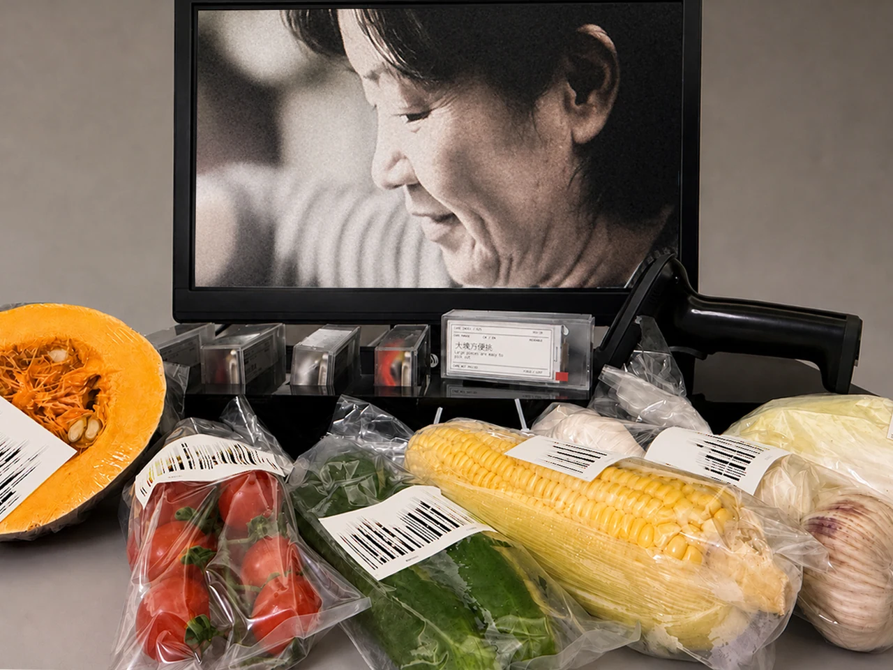
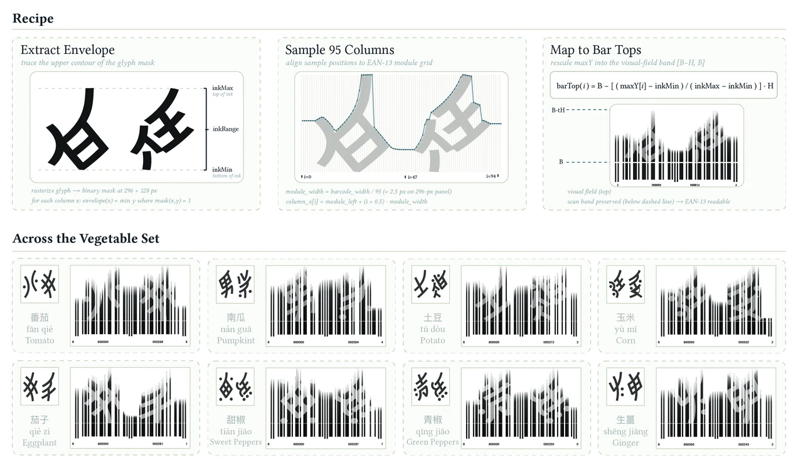
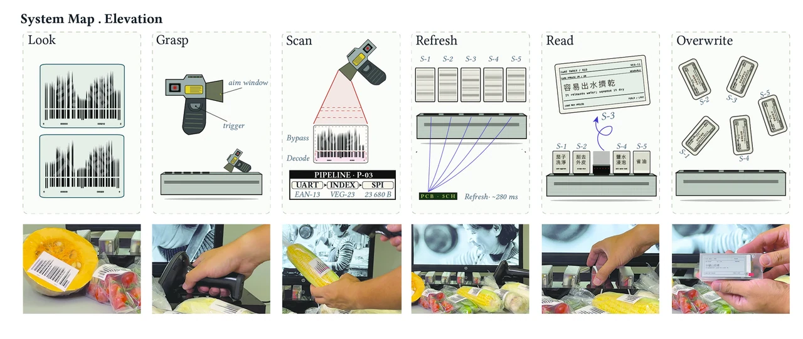
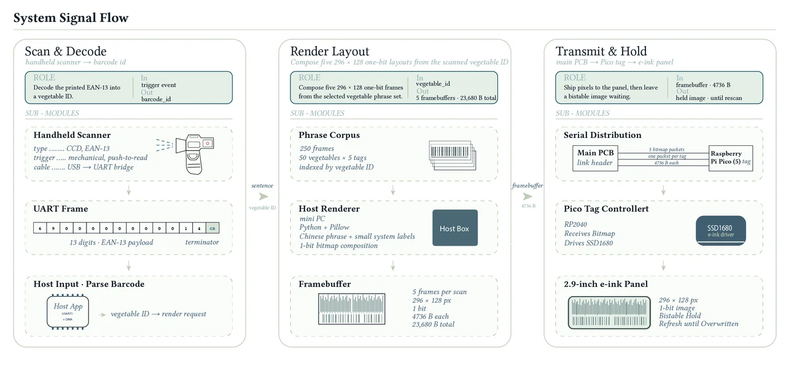
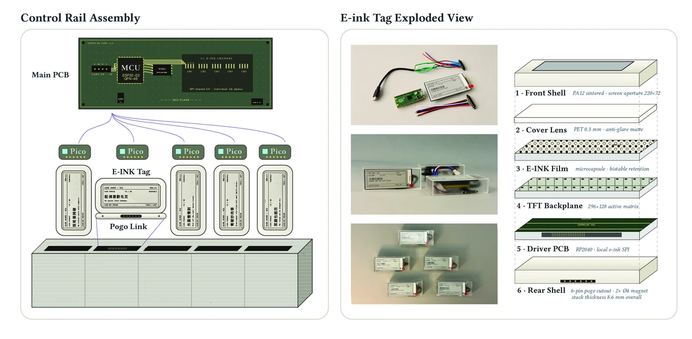
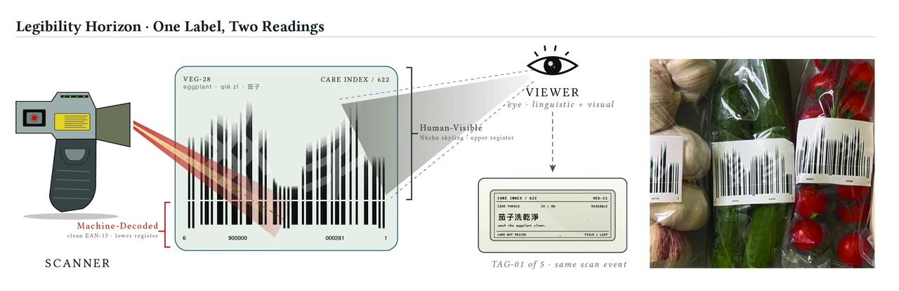
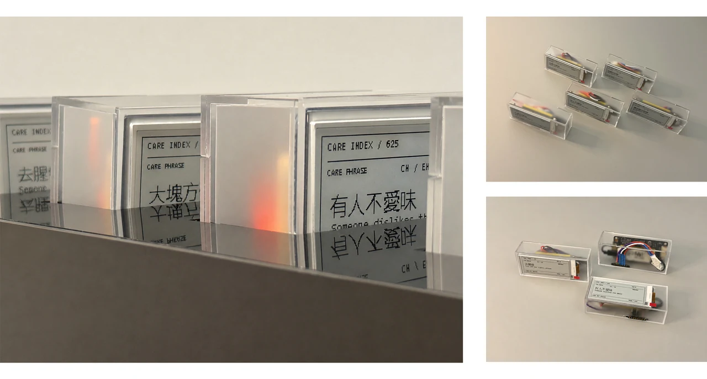

INT–δ: Writing Outside the Barcode
Personal ProjectTools & Technologies: EAN-13 barcode system, Noto Traditional Nüshu, OpenType.js, handheld barcode scanner, custom PCB, Raspberry Pi Pico, 2.9-inch e-ink displays, SPI Flash, deterministic glyph mapping, custom acrylic rail system
Introduction
Writing Outside the Barcode is an interactive installation that transforms an ordinary supermarket scan into an encounter with the often-unrecorded labor of cooking and care.
Six vegetables are labeled with modified EAN-13 barcodes and displayed beside a handheld scanner and five e-ink price tags. The lower part of each barcode remains machine-readable, while its upper register follows the elongated contour of Nüshu characters.
When a vegetable is scanned, the system recognizes the commodity as usual—but instead of returning a price, the e-ink tags display short household cooking phrases drawn from interviews about everyday food preparation.
The work asks what happens when an interface designed to record commodities is made to briefly carry the knowledge, memory, and care that normally remain outside the transaction.

Concept
A supermarket barcode is designed to remember what a transaction needs:
What is the product? How much does it cost?
But after that vegetable enters the home, another kind of knowledge begins.
Someone remembers that the stems are tough.
Someone cooks one portion longer for an elderly parent.
Someone leaves out spice for a child.
Someone knows which leaves another person prefers.
These judgments are practical, relational, and often passed through speech rather than formal records.
The project places these two forms of knowledge on the same surface: commodity information that must be read by the machine, and household care that becomes readable to a person.
Nüshu enters the work through this distinction. Historically sustained through women’s relationships around Jiangyong, Nüshu occupies a position beside dominant forms of official writing. The project works specifically with its visual contour and historical position rather than claiming its semantic or community authority.



System
Dual-Register Barcode
Each label contains two visual registers.
The lower register preserves a standard EAN-13 barcode with its required modules, guard bars, spacing, and quiet zones.
The upper register reshapes the bar heights according to the silhouette of a Nüshu glyph.
The result can therefore be read in two different ways:
Machine → commodity identity
Viewer → Nüshu-shaped visual form
The intervention does not destroy the original retail function. The barcode must still scan successfully before the second reading can appear.
Scan
The viewer picks up a handheld scanner and scans one of the labeled vegetables.
The scanner decodes the EAN-13 number and sends the result to the control system.
Index
The scanned number is matched to a vegetable ID in the barcode index.
Refresh
The system retrieves five pre-rendered phrase frames associated with that vegetable and distributes them to five Raspberry Pi Pico controllers.
Each controller refreshes one e-ink price tag.
Read
Instead of a numerical price, the viewer encounters short phrases about washing, cutting, taste, health, tenderness, portioning, or care.
Overwrite
Scanning another vegetable replaces the existing phrases with another set.
The full interaction follows:
Look → Grasp → Scan → Refresh → Read → Overwrite
One Label, Two Readings
The central technical problem was to allow the barcode to remain operational while introducing another visual register above it.
The system samples the silhouette of a Nüshu glyph into the same ninety-five columns used by EAN-13.
Each column records the glyph’s upper boundary, which determines how far the corresponding barcode column extends into the visual field.
The lower scanning region remains clean.
The upper region carries the Nüshu-shaped contour.
The same printed label therefore supports two simultaneous forms of legibility: one optimized for machine decoding, the other for human interpretation.


Household Cooking Phrases
The displayed language comes from 65 household interviews conducted with people who regularly prepare meals.
The interviews asked about the small decisions made after vegetables enter the home: washing, cutting, cooking time, bodily condition, taste preferences, and how food preparation changes for different family members.
The material was edited into 250 short phrases organized around recurring themes including:
- washing and sorting
- health and diet
- household taste
- softening and cutting
- saving and portioning
The phrases preserve concrete action and relational context while remaining short enough to be read quickly on a small e-ink display.
Examples include:
“wash the cabbage three times”
“simmer the leaves”
“the child wants the leaves”
“the stems are tough, cook them two more minutes”
Instead of presenting this material as a searchable archive, the installation allows only a few phrases to appear after each scan.
Final Prototype
The final installation combines six labeled vegetables, a handheld USB scanner, a custom control board, five Raspberry Pi Pico controllers, and five removable 2.9-inch e-ink price tags.
The e-ink modules sit in acrylic rail slots connected through magnetic Pogo Pins, allowing each tag to be removed, handled, and returned to the display.
After a successful scan, the controller identifies the vegetable and dispatches five phrase frames to the displays. The transfer and framebuffer dispatch take approximately 280 ms before the e-ink refresh becomes visible.
The physical system preserves the visual grammar of a retail price display while changing what the interface is permitted to say.

Exhibition
The work was exhibited as a tabletop installation with six vegetables.
Most viewers understood the interaction without additional instruction: they picked up the scanner, scanned a vegetable, waited for the e-ink refresh, and then pulled a tag forward to read it.
Several viewers connected the phrases to personal memories. One phrase about soaking fruit in salt water recalled a mother’s kitchen instruction; another phrase about cooking tough stems longer recalled a grandmother.
The interaction therefore moved through two distinct moments of attention:
first confirming that the machine had successfully read the commodity, then slowing down to read what the price field returned.
Reflection
- Uses an existing retail system without disabling its original function
- Places machine-readable commodity information beside human-readable household knowledge
- Makes domestic cooking labor briefly visible within an interface normally organized around price
- Treats Nüshu through typographic form and historical position rather than appropriating its semantic authority